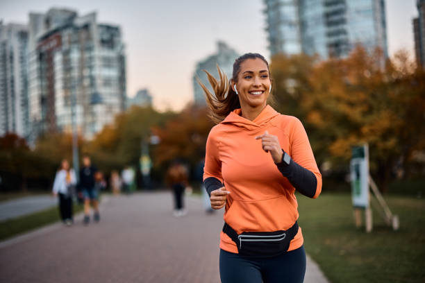

Good Health and well-being
Physical Fitness
Introduction to Physical Fitness
The definition of physical fitness describes a condition that allows people to execute their normal work activities and sports competitions and their occupational responsibilities with success. Using the right nutrition together with daily exercise and enough rest leads people to achieve this condition. Body ability to perform well in work and leisure activities and fight hypokinetic diseases while enhancing immunity function along with handling emergency situations defines physical fitness within health studies.
The five components of physical fitness are:
1.Cardiovascular Endurance
2.Muscular Strength
3.Flexibility
4.Body Composition
5.Muscular Endurance

Benefits of Physical Fitness
Engaging in regular physical activity offers numerous health benefits, such as:
- Routine physical exercise fortifies heart muscles and improves blood circulation which prevents the development of heart diseases.
- The inclusion of strength training exercises will boost both muscular strength and endurance processes that are vital for senior citizens.
- Physical exercise triggers endorphin release that helps people recover from depression and anxiety thus improving their mental well-being and reducing stress levels.
- The body can control weight through exercise because it helps burn calories while developing muscles which supports weight maintenance and stops obesity patterns.
- Healthcare professionals have found that regular physical exercise improves sleep quality primarily among older people.

Types of Physical Fitness Activities
The complete physical fitness and well-being require performing multiple exercises in different forms. Heart-lung health benefits and enhanced endurance emerge when people perform cardiovascular exercises that include running and cycling alongside swimming because these activities benefit the way oxygen spreads through the body. Behavioral programs using weights and resistance training enable people to keep their muscle mass healthy and develop their strength capacities while enhancing metabolic operations. Through yoga and stretching workouts people can improve joint mobility and avoid injuries together with achieving relaxation. Older adults together with athletes strongly benefit from balance and coordination exercises that serve to augment stability functions and fend off injuries. The addition of these exercises to one's workout routine gives an individual access to complete fitness benefits that support their both physical and mental well-being.

Healthy Fitness Habits
Some healthy fitness habits are:
- Realistic fitness objectives that have specific requirements with achievable results which need a time limit help both motivational maintenance and objective-tracking.
- Doing exercise is essential, make sure to do activities with 30 minutes of duration in each workout session that include both cardiovascular and strength building along with flexibility training.
- Drink plenty of water throughout working out and including prior to beginning exercises because hydration supports both performance quality and operates to maintain proper hydration.
- A balanced diet that includes protein with healthy fats along with complex carbohydrates should be followed because such nutrients fuel physical activity while helping muscles recover after workouts.
- Give your muscles restoration periods by sleeping enough each night along with scheduling rest days throughout your routine.
- Perform warm-up then cool-down exercises before and after exercise because they help avoid injuries and enhance your flexibility.
- Your workout success will improve with steady body alignment between exercises so you minimize wear and tear and avoid bodily harm.
- Pay attention to your body by staying away from excessive training because it protects you from weariness and keeps you safe from potential injuries.
- Fitness success depends on selecting enjoyable activities whether dancing swimming or sports as these will maintain your interest and commitment.
- You should establish workout patterns according to your daily routine then continue them routinely to achieve permanent health outcomes.